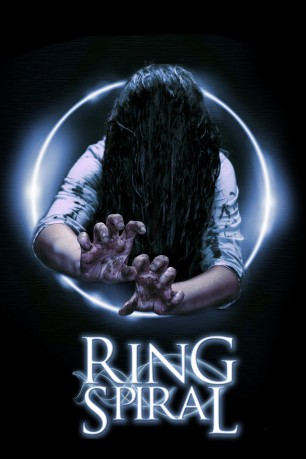

#4584 Ring Spiral
Alternativ: Rasen (Originaltitel)
 
 IMDB-Wertung: 5.3 / 10
IMDB-Wertung: 5.3 / 10  Metascore: 0
Metascore: 0 
Beim Sezieren einer Leiche muss der Pathologe Andou Mitsuo feststellen, dass er gerade den Körper eines alten Freundes untersucht. Er entdeckt einen Tumor und einen verdächtigen, verschlüsselten Virencode. Andou und sein Kollege Miyashita finden noch weitere Leichen mit dem gleichen Virus. Die Hinweise gehen bis zu einer jungen Frau zurück, die ein tödliches Video in Umlauf gebracht hat.
Jahr: 1998
Dauer: 97 Minuten
FSK: 16
Land: Japan Studio: Anolis EntertainmentTonspuren:
Untertitel:
Auflösung: 1080p (1920x1040) Größe: 8642 MB
Genre: Drama, Fantasy, Horror, Mystery, Thriller
Regisseur: Jôji Iida
Drehbuch: Matt Sazama
Soundtrack:
Darsteller:
 Miki Nakatani als Mai Takano
Miki Nakatani als Mai Takano Hiroyuki Sanada als Ryûji Takayama
Hiroyuki Sanada als Ryûji Takayama Kôichi Satô als Mitsuo Andô
Kôichi Satô als Mitsuo Andô- Hinako Saeki als Sadako Yamamura
- Shingo Tsurumi als Miyashita
- Shigemitsu Ogi als Maekawa Keibuho
 Yutaka Matsushige als Yoshino
Yutaka Matsushige als Yoshino- Daisuke Ban als Heihachirô Ikuma
- Naoaki Manabe als Kobayashi
- Naoto Adachi als Funakoshi
- Eri Kakurai als Rieko Andô
- Ryûichi Sugahara als Takanori Andô
- Masanobu Yada als Junsa Buchô
- Ryûma Uchida als Kansatsui Joshu
- Tadashi Takatsuki als Kirokui
- Kôzô Satô als Shashin Gakari
- Tomohiro Okada als Kaibô Joshu
- Suguru Kamioki als Kaibô Joshu
- Yoshiyuki Tanno als Keikan
- Hiroshi Shimizu als Keikan
- Reon Yamazaki als Hôdôkyoku Sutaffu
- Hiromi Tokunaga als Hôdôkyoku Sutaffu
- Toshinobu Sasaki als Hôdôkyoku Sutaffu
- Tomotarô Tobimatsu als Hôdôkyoku Sutaffu
- Shintarô Hayasaka als Keibiin
- Akira Ôhashi als Resukyûtai
- Eiji Kobayashi als Resukyûtai
- Yûji Kobayashi als Resukyûtai
- Tomohiko Akiyama als Resukyûtai
- Hirofumi Fukuzawa als Resukyûtai
Datei: X:\HD-Eastern-Collections\Ringu\Ring Spiral (1998, FSK16, 1920x1040).mkv seit 18.10.2016
Festplatte: HD Eastern+Western
 Es gibt insgesamt 9 Filme in der Gruppe 'HD-Eastern-Collections\Ringu'
Es gibt insgesamt 9 Filme in der Gruppe 'HD-Eastern-Collections\Ringu'